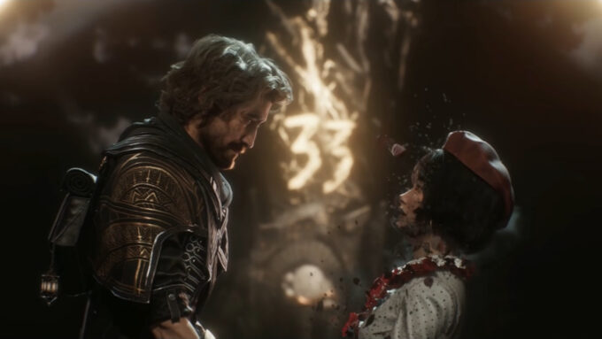
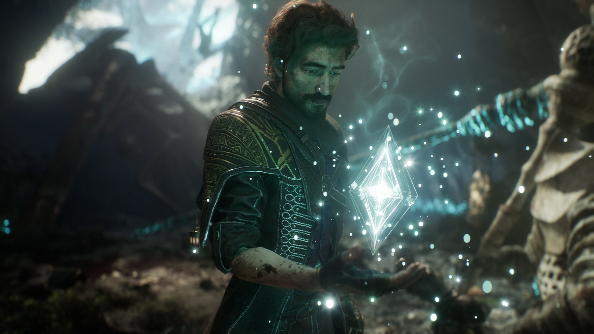

Historia
A widely respected engineer in Lumière, Gustave has devoted much of his life to the betterment of the city. Among his contributions to Lumière's agriculture is Aquafarm 3, a project he took part in alongside Sciel and Sophie that secured food supply for many neighbourhoods. He also helped reinforce Lumière's Shield Dome and other aspects of its defence. With the support of his research partner Lune, he created the Lumina Converter, a device that would allow Expeditioners to better harness Chroma, and use Pictos more efficiently. Gustave has a sister, Emma, who serves as chief councilor of Lumière. Alongside Emma, he is Maelle's guardian, and has acted as both a brother and a father-like figure to her since the loss of her biological parents at the age of three. Gustave also has several other children apprenticed to him, who he hopes will continue his work after he is gone. Gustave was in a relationship with Sophie, a pairing many in Lumière spoke positively of. The relationship became strained as a result of their differing opinions over whether or not to have children in a world without any real future, owing to the Gommage; this eventually led to their split. The two remained on friendly terms, but did not have much contact over the next few years. At some point Gustave suffered the loss of his left forearm. At his request, his apprentices created an electric prosthetic arm as a replacement.

Four years after their relationship ended, Gustave reconnects with Sophie and supports her on the day she and others of her age are due to Gommage. The two acknowledge their feelings for each other before her passing. Sophie's death has a profound effect on Gustave and provides a driving force in his quest to destroy the Paintress as a member of Expedition 33. Expedition 33 meets catastrophe upon landing on the Continent. Most of the Expeditioners are killed by a white-haired man and his army of Noirs, while the few survivors are sent scattering across the land. Gustave finds himself waking up near a waterfall in Spring Meadows. Stumbling upon the bodies of his compatriots and believing that all is lost, he attempts suicide but is stopped by Lune. He resolves to keep going, in part for the sake of Maelle. The two track down Maelle at the Manor after going through a portal in Flying Waters. They are later joined by Sciel after unexpectedly finding themselves facing her in the arena at the Gestral Village. Over the course of their journey, Gustave duly records his travel and exploration on the Continent, hoping that one day his apprentices will be able to read them in his journal. After reaching Stone Wave Cliffs and retrieving "Florrie", one of Esquie's magic rocks with which they could cross another sea, the Expedition is again confronted by the white-haired man, Renoir.
